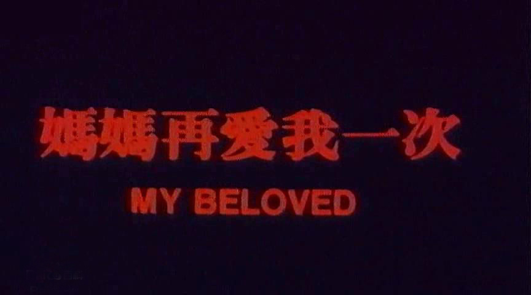
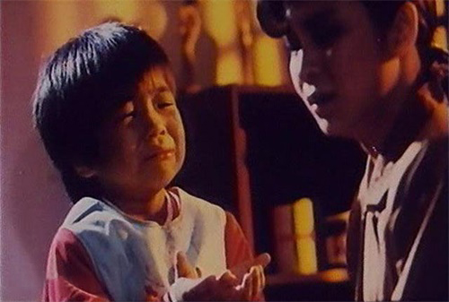
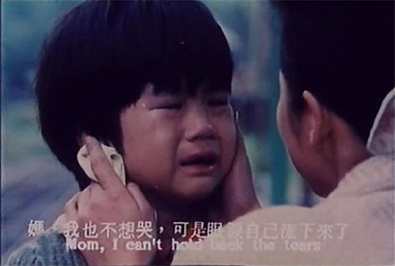
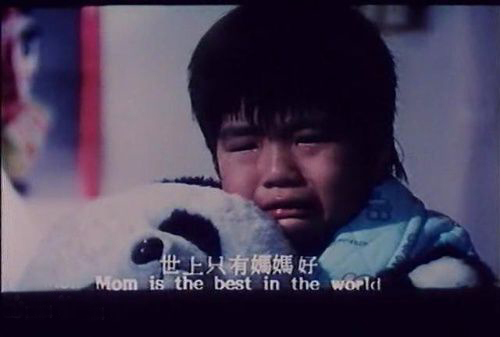

剧情简介
电影剧情以倒叙方式进行，描写精神病医生林志强（孙亚东饰）留学归国，正要展开精神病院的业务，偶然发现院中一名病人，竟是他失踪18年的母亲秋霞（杨贵媚饰）。原来当年其母秋霞与其父林国荣相恋，但遭林母以秋霞身家不清白为由拆散鸳鸯，另外为国荣娶妻。已经怀孕的秋霞到乡下投靠姨母，并在生下志强后独力抚养，母子二人感情极佳。数年后，国荣之妻娟娟经证实不能生育，林家父母为了延续香火，用尽办法要志强离开母亲回到林家认祖归宗。秋霞几经内心挣扎，终于答应。但年幼的志强因思念母亲而无法过平静生活，经常偷偷回到乡下找母亲。一次风雨之夜，志强躲在庙外避雨，秋霞等人遍寻不着，翌晨找到时，志强已奄奄一息昏迷不醒。秋霞大为激动，失足跌下楼梯成为疯妇。18年后，志强终于找到他心爱的母亲，并以一曲儿歌“世上只有妈妈好”重新唤醒母亲尘封多年的记忆，母子相认大团圆。
影片花絮



电影评价
一直对童年时看的这部片子念念不忘，但是都心有余悸，害怕再看会毁灭了童年时对这部片子的美好印象。前些日子，在天涯上看到一篇帖子，说说最感动的电影，我看到这部电影被很多很多人推崇，于是决定再看一次。
18年前，这部片子赚足了中国人的眼泪，18年后的今天，再次观看依然让我嚎提大哭。18年，我都长大了，也经历了很多的人情世故，很多东西都习以为常，这部片子的简单的故事并没有让我特别难受，更多的反而是对人性的感动，在这个纷繁复杂、人情世故的时代，母爱依然是最伟大的，最打动人心的情感。
18年的生命恍然而过
成长的点滴让心灵坚强
一贯的风格冷漠了你我的心
所有的姿态倾诉社会的病容
念念不忘的是真挚的深情
18年的歌谣依然清晰
岁月的变换让社会变迁
生命的本质穿透所有的心灵
母爱依然是天下最伟大的情感